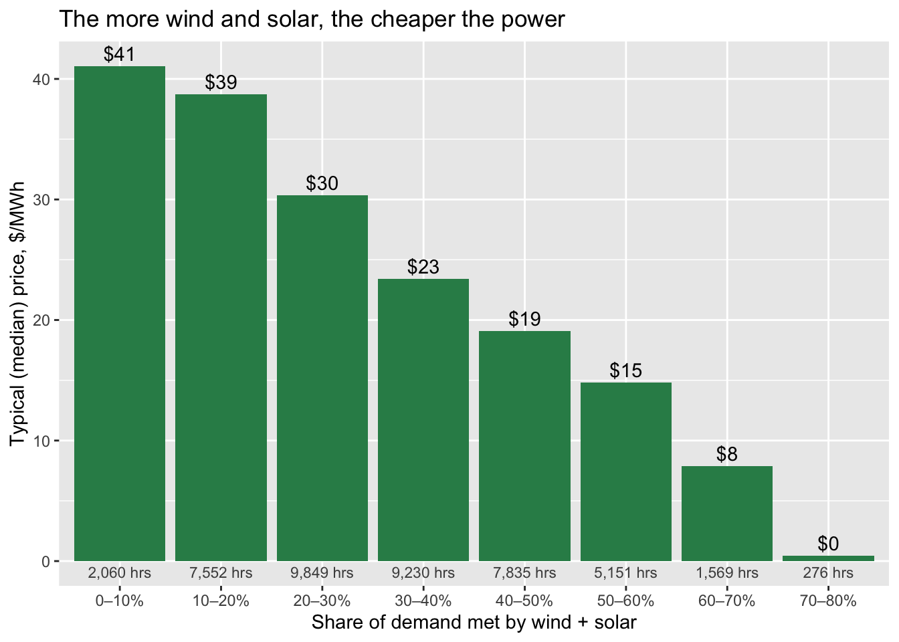
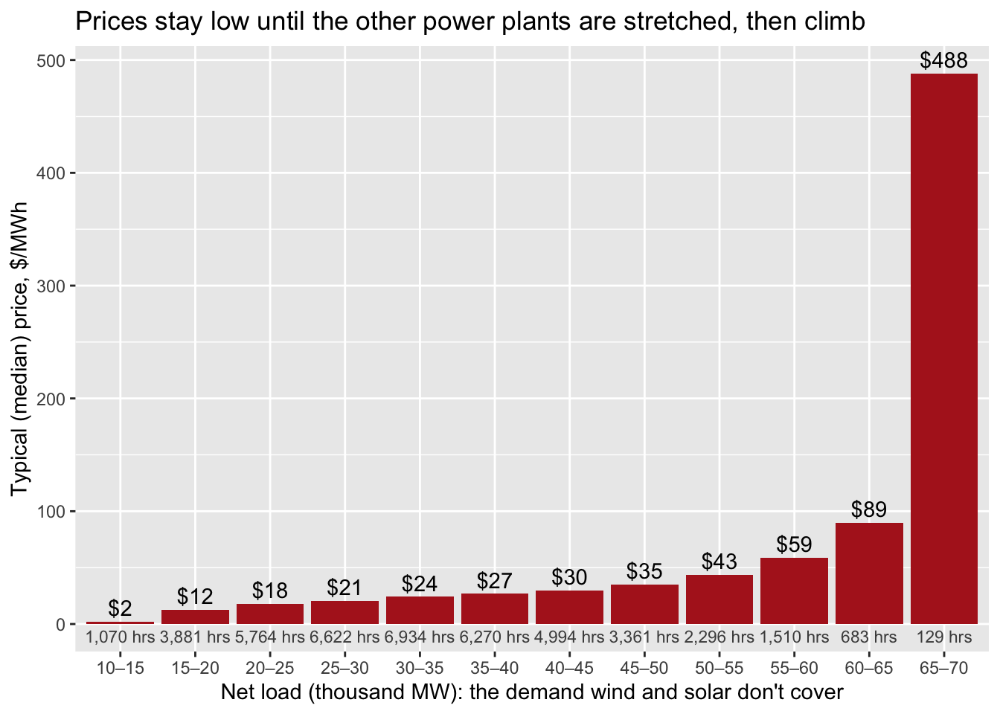
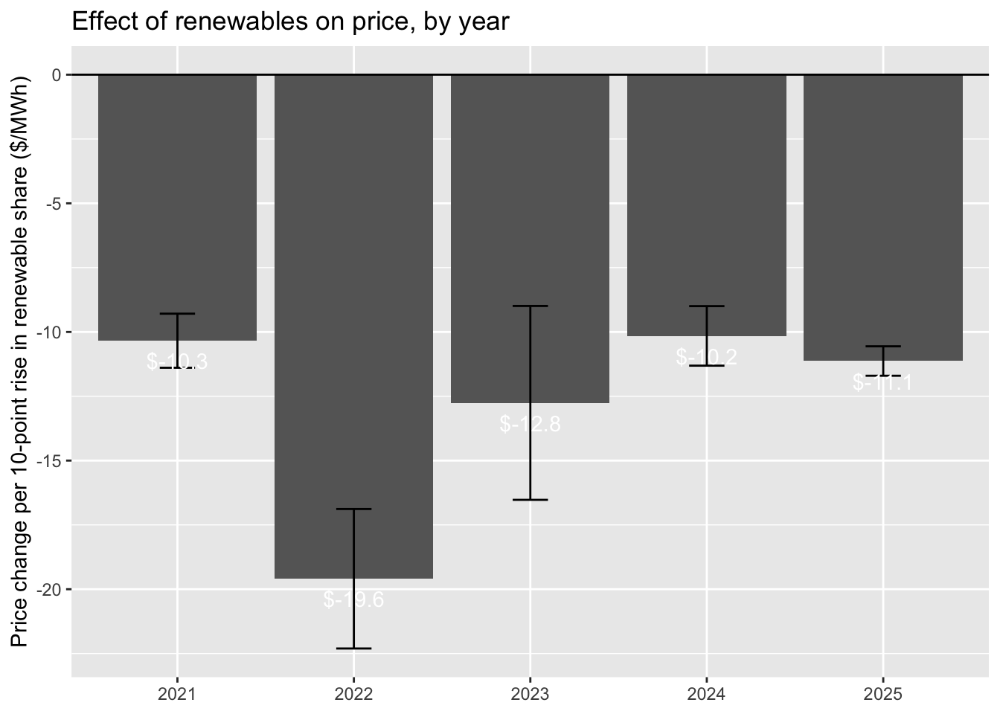

Code: load packages and data
library(tidyverse)
library(lubridate)
# Run the scripts in R/ first (see the README).
ercot <- read_rds(here::here("data/processed/ercot_hourly.rds"))Juan Ignacio Mendez Valdez
The main question of the project: when more of demand is met by wind and solar, how much lower is the price, and does that effect change over time?
base <- ercot |>
filter(hub == "HB_BUSAVG", !is.na(renewable_share)) |>
mutate(
hour_f = factor(hour_local),
month_f = factor(month(time_local)),
year_f = factor(year),
uri = time_local >= as.POSIXct("2021-02-10", tz = "America/Chicago") &
time_local < as.POSIXct("2021-02-21", tz = "America/Chicago"),
season = case_when(month(time_local) %in% 6:8 ~ "Summer",
month(time_local) %in% c(12, 1, 2) ~ "Winter",
TRUE ~ "Spring/Fall")
)
no_uri <- filter(base, !uri)
# Effect of renewables on price, per 10 percentage points of renewable share
effect <- function(model) {
tibble(
effect_per_10pp = coef(model)[["renewable_share"]] * 0.1,
std_error = sqrt(diag(vcov(model)))[["renewable_share"]] * 0.1,
r_squared = summary(model)$r.squared,
hours = nobs(model)
)
}no_uri |>
mutate(share_bin = cut(renewable_share, breaks = seq(0, 1, 0.1),
labels = paste0(seq(0, 90, 10), "–", seq(10, 100, 10), "%"))) |>
filter(!is.na(share_bin)) |>
group_by(share_bin) |>
summarise(median_price = median(rt_price), hours = n()) |>
filter(hours >= 50) |>
ggplot(aes(share_bin, median_price)) +
geom_col(fill = "seagreen") +
geom_text(aes(label = paste0("$", round(median_price))), vjust = -0.4) +
geom_text(aes(y = 0, label = paste(scales::comma(hours), "hrs")),
vjust = 1.5, size = 3, colour = "grey30") +
labs(x = "Share of demand met by wind + solar",
y = "Typical (median) price, $/MWh",
title = "The more wind and solar, the cheaper the power")
How to read: each bar groups hours by how much of demand wind and solar covered. Bar height is the typical price in those hours; the number below each bar is how many hours fall in that group.
Findings: As wind and solar supply more of demand, power gets cheaper. In hours when they cover 10–20% of demand, the typical price is about $41/MWh; when they cover 50–60%, it falls to about $15/MWh. This shows that renewables and lower prices go together; the Model section tests whether renewables are the cause.
Net load is demand minus wind and solar: the power that gas, coal and nuclear plants still have to supply.
no_uri |>
mutate(net_load_bin = cut(net_load_mw / 1000, breaks = seq(10, 70, 5),
labels = paste0(seq(10, 65, 5), "–", seq(15, 70, 5)))) |>
filter(!is.na(net_load_bin)) |>
group_by(net_load_bin) |>
summarise(median_price = median(rt_price), hours = n()) |>
filter(hours >= 50) |>
ggplot(aes(net_load_bin, median_price)) +
geom_col(fill = "firebrick") +
geom_text(aes(label = paste0("$", round(median_price))), vjust = -0.4) +
geom_text(aes(y = 0, label = paste(scales::comma(hours), "hrs")),
vjust = 1.5, size = 3, colour = "grey30") +
labs(x = "Net load (thousand MW): the demand wind and solar don't cover",
y = "Typical (median) price, $/MWh",
title = "Prices stay low until the other power plants are stretched, then climb")
How to read: each bar groups hours by net load, in thousands of MW. Bar height is the typical price in those hours.
Findings: Prices stay low across most net load levels, then rise sharply once net load passes about 60,000 MW. In the rare hours above 65,000 MW (129 hours), the typical price is about $488/MWh, more than ten times the usual price of about $41. The renewable share chart hides these spikes: those heat-wave evenings are mixed in with thousands of cheap low-renewable hours. Net load separates them, which makes it the better predictor of price.
Each model adds one thing:
models <- list(
"1. Renewable share only" = lm(rt_price ~ renewable_share, base),
"2. + hour, month, year controls" = lm(rt_price ~ renewable_share + hour_f + month_f + year_f, base),
"3. Model 2 without Winter Storm Uri" = lm(rt_price ~ renewable_share + hour_f + month_f + year_f, no_uri),
"4. Model 3 with day-ahead price" = lm(da_price ~ renewable_share + hour_f + month_f + year_f, no_uri)
)
map_dfr(models, effect, .id = "model") |>
knitr::kable(digits = c(0, 2, 2, 3, 0),
caption = "Change in price ($/MWh) for each 10-point rise in renewable share")| model | effect_per_10pp | std_error | r_squared | hours |
|---|---|---|---|---|
| 1. Renewable share only | -37.61 | 1.39 | 0.016 | 43795 |
| 2. + hour, month, year controls | -42.43 | 1.59 | 0.056 | 43795 |
| 3. Model 2 without Winter Storm Uri | -12.39 | 0.48 | 0.057 | 43531 |
| 4. Model 3 with day-ahead price | -9.50 | 0.39 | 0.096 | 43531 |
Findings: More wind and solar means lower prices. After comparing only similar hours (same time of day, month and year) and removing Winter Storm Uri, each 10-point increase in wind and solar’s share of demand lowers the real-time price by about $12/MWh, and the day-ahead price by about $9.50/MWh.
Including Uri more than triples the estimate (to about $42), because that one week combined very little wind and solar with $9,000 prices. We use the estimate without Uri, since a single extreme event shouldn’t drive the result.
Renewable share explains only 6–10% of the hour-to-hour swings in price; most of the variation comes from rare price spikes that depend on other things, such as demand and power plant outages.
by_year <- no_uri |>
group_by(year) |>
group_modify(~ effect(lm(rt_price ~ renewable_share + hour_f + month_f, data = .x))) |>
ungroup()
ggplot(by_year, aes(factor(year), effect_per_10pp)) +
geom_col(fill = "grey40") +
geom_errorbar(aes(ymin = effect_per_10pp - 1.96 * std_error,
ymax = effect_per_10pp + 1.96 * std_error), width = 0.2) +
geom_text(aes(label = paste0("$", round(effect_per_10pp, 1))),
vjust = ifelse(by_year$effect_per_10pp < 0, 1.8, -0.8), colour = "white") +
geom_hline(yintercept = 0) +
labs(x = NULL, y = "Price change per 10-point rise in renewable share ($/MWh)",
title = "Effect of renewables on price, by year")
| year | effect_per_10pp | std_error | r_squared | hours |
|---|---|---|---|---|
| 2021 | -10.34 | 0.54 | 0.101 | 8495 |
| 2022 | -19.59 | 1.38 | 0.073 | 8760 |
| 2023 | -12.76 | 1.92 | 0.091 | 8760 |
| 2024 | -10.15 | 0.59 | 0.081 | 8780 |
| 2025 | -11.13 | 0.29 | 0.231 | 8736 |
Findings: Renewables lowered prices in every year, by about $10–13/MWh per 10-point increase, except in 2022, when the effect nearly doubled to about $20. 2022 was a year of expensive natural gas, so every MWh of wind and solar replaced costlier gas power and saved more. As gas got cheaper in 2023–2024, the effect shrank back.
In 2025, renewables explain far more of the hour-to-hour price swings (23%, up from 7–10% in earlier years). As solar has grown, it has become a bigger driver of when power is cheap or expensive.
| season | effect_per_10pp | std_error | r_squared | hours |
|---|---|---|---|---|
| Spring/Fall | -11.56 | 0.45 | 0.064 | 21956 |
| Summer | -23.44 | 1.95 | 0.075 | 11039 |
| Winter | -10.06 | 0.47 | 0.071 | 10536 |
ercot |>
filter(!is.na(renewable_share)) |>
filter(!(time_local >= as.POSIXct("2021-02-10", tz = "America/Chicago") &
time_local < as.POSIXct("2021-02-21", tz = "America/Chicago"))) |>
mutate(hour_f = factor(hour_local),
month_f = factor(month(time_local)),
year_f = factor(year)) |>
group_by(hub) |>
group_modify(~ effect(lm(rt_price ~ renewable_share + hour_f + month_f + year_f, data = .x))) |>
arrange(effect_per_10pp) |>
knitr::kable(digits = c(0, 2, 2, 3, 0), caption = "Effect by hub")| hub | effect_per_10pp | std_error | r_squared | hours |
|---|---|---|---|---|
| HB_WEST | -16.02 | 0.49 | 0.063 | 43531 |
| HB_BUSAVG | -12.39 | 0.48 | 0.057 | 43531 |
| HB_NORTH | -12.13 | 0.49 | 0.054 | 43531 |
| HB_SOUTH | -11.88 | 0.45 | 0.058 | 43531 |
| HB_HOUSTON | -11.04 | 0.51 | 0.054 | 43531 |
Findings: Renewables lower prices most in summer, about $23/MWh per 10-point increase, twice as much as in winter ($10) or spring and fall ($12). Summer is when the grid is tightest, so extra wind and solar keep expensive peaker plants switched off.
West Texas sees the biggest drop ($16/MWh), compared with $11–12 at the other hubs. Most wind farms are in West Texas, and when power lines to the rest of the state fill up, the extra power stays local and pushes West prices down further. Houston, farthest from the wind farms, sees the smallest effect ($11).
A note on uncertainty: the uncertainty numbers in these tables assume each hour is independent, but neighboring hours are very similar (same weather, same power plants running). That makes the true uncertainty larger than shown. The conclusions don’t change: the effects are far enough from zero that renewables clearly lower prices, but the exact dollar amounts should be read as estimates.
Wind and solar lower Texas power prices, most of all when the grid is under strain.